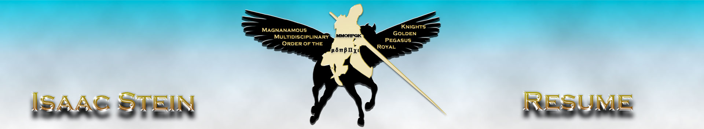

Home
About
Contact
Home
About
Contact
menu

Experience:
shopgoodwill .com
Ecommerce Intern
May 2016- August 2016
Photographed items to be listed for auction on website.
Scanned hard copy books and media for online sales and shipping.
Rotated stock and recycled inventory on shopgoodwill.com.
Brookhaven National Laboratory
Web Design Intern
June 2012- September 2012
Assisted Network Engineers in developing a network switch inventory web application.
Wrote interactive user interface with PERL CGI for UNIX.
Tested MySQL Database queries to track the location and condition of network switches.
Broward College
IT Help Desk Analyst
September 2007-December 2009
Assisted customers over the phone by trouble shooting browser problems and resetting passwords.
Opened and closed service tickets using Unicenter Service Plus Client.
Worked with IT Engineers to trouble shoot networks and reboot systems.
Skills:
Web Design, Game Design, Graphic Design, Photography, Script Writing, Video Production and Editing
Education:
University of Central Florida
Bachelor of Arts in Digital Media, December 2017
Major in Web Design and Minor in Game Design
Tallahassee Community College
Associate of Science in Game Design, May 2012
Major in Game Design and Minor in Web Design
Presidents List